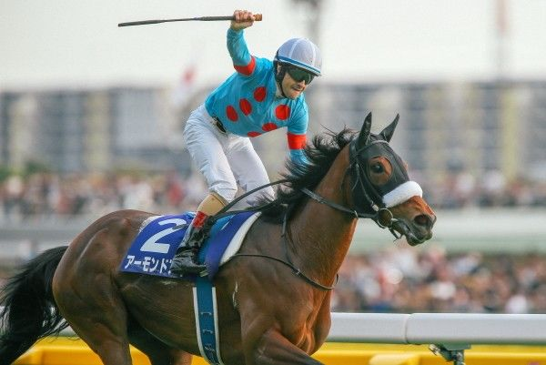
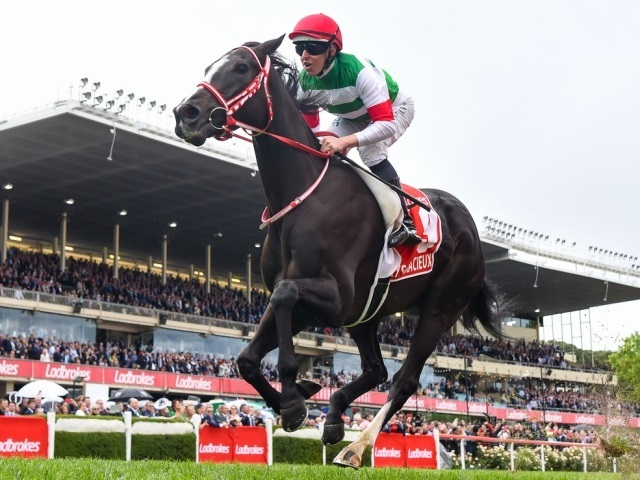
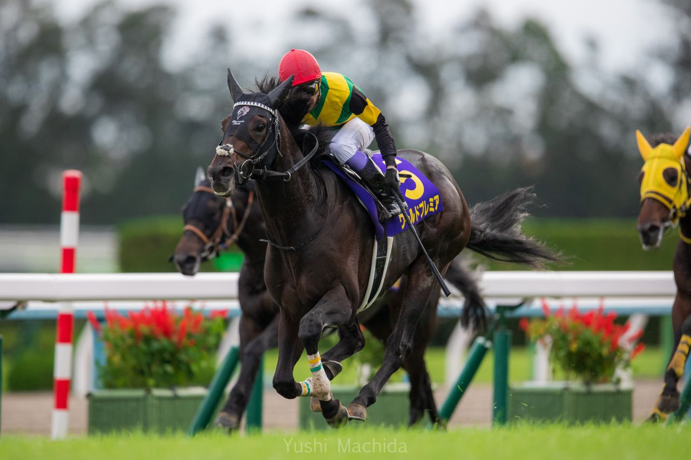
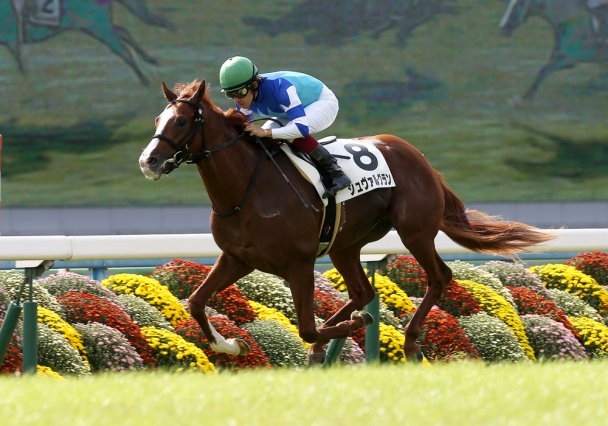
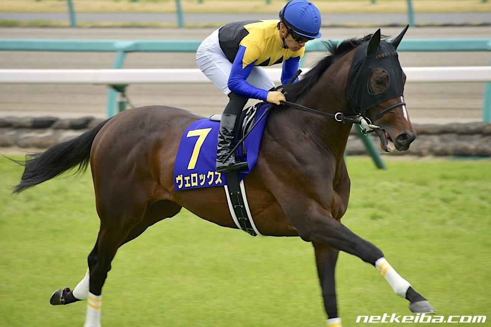

平成G１レース最多勝利数（俺調べ）のアーモンドアイ。G1では彼女を買えばまず間違いないだろう。

有馬記念2019ではラストスパートで二馬身差をつけて堂々の第一位。名のある数々の競走馬を制する力の持ち主。

2019有馬ではこの子を買っていなかったため惜しくも惨敗。厩舎コメントをしっかり目を通しておくべきだった。

2019有馬記念では筆者と同じ苗字の福永祐一が騎手を務める。14番人気にも関わらず６着まで追い上げるポテンシャルの持ち主。今後の活躍に期待。

数々のG1レースで結果を残すヴェロックス。名前が好き。とても好き。また毛並みの美しさが他の競走馬にはない特徴を持つ。ぜひ騎乗したい馬の一人である。
